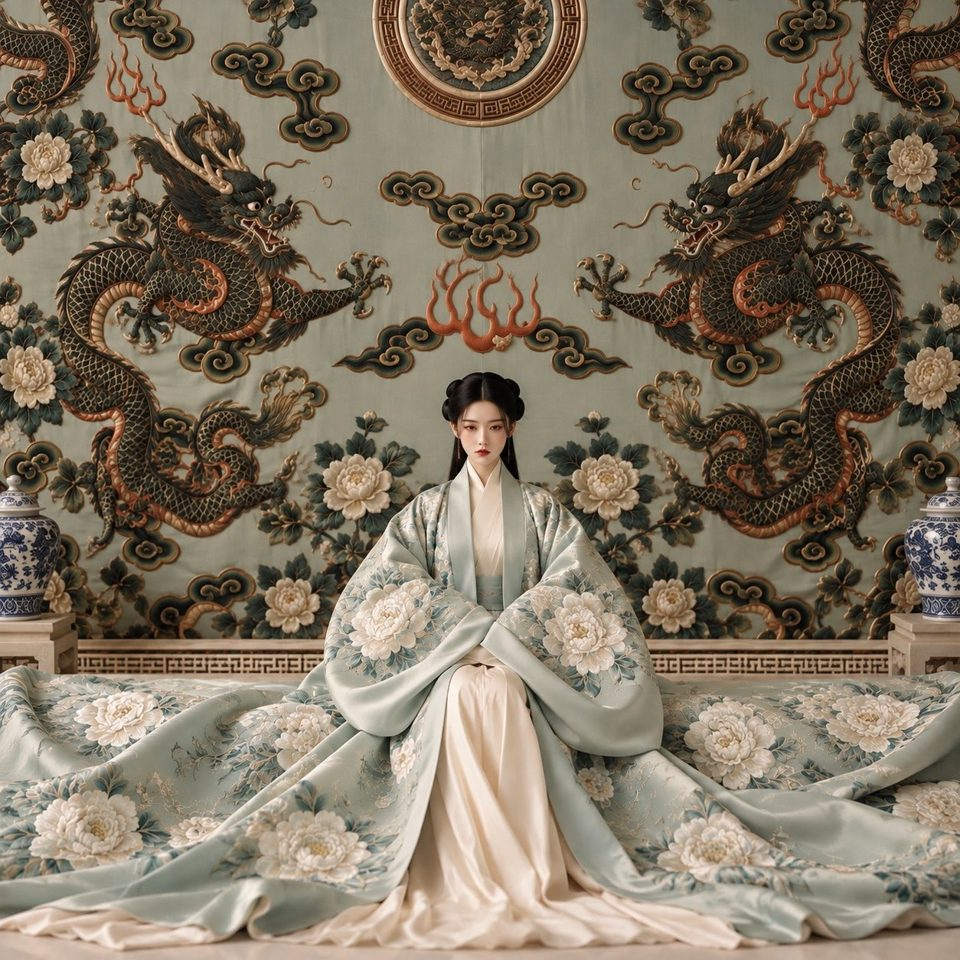

青瓷宫廷像
青瓷色汉服女子端坐于双龙刺绣宫墙前，青花瓷瓶对称立于两侧。低饱和的青、玉、象牙与古铜色调。
| 作者 | Zidan 子丹 @liluocheng13 |
|---|---|
| 平台 | X |
| 模型 | GPT Image (ChatGPT) |
| 点赞 | 118 |
| 发布 | 2026-10-26 |
| 画风 | 写实电影感 国风水墨 |
| 地域氛围 | 中式 |
| 题材 | 历史年代 时尚美妆 |
| 情绪 | 史诗壮阔 |
提示词 · 来自正文
ChatGPT prompt : A masterful Chinese imperial portrait of a serene young noblewoman seated at the center of an ancient palace hall, symmetrical frontal composition, full body, eye-level. Delicate East Asian features, cold, melancholic, aristocratic expression. Traditional court hairstyle with rounded side buns. She wears a pale celadon hanfu with wide sleeves, embroidered with oversized white peonies and fine silk texture; hands hidden in the sleeves. Behind her, a symmetrical wall with two facing dragons in dark bronze embroidery, auspicious clouds, and sage-green silk; blue-and-white porcelain vases at both edges. Soft diffused daylight, low-saturation palette of celadon, jade, ivory, and bronze. Photographic realism blended with classical painting. No modern elements, no visible hands, no text, no watermark. Ratio : 1:1